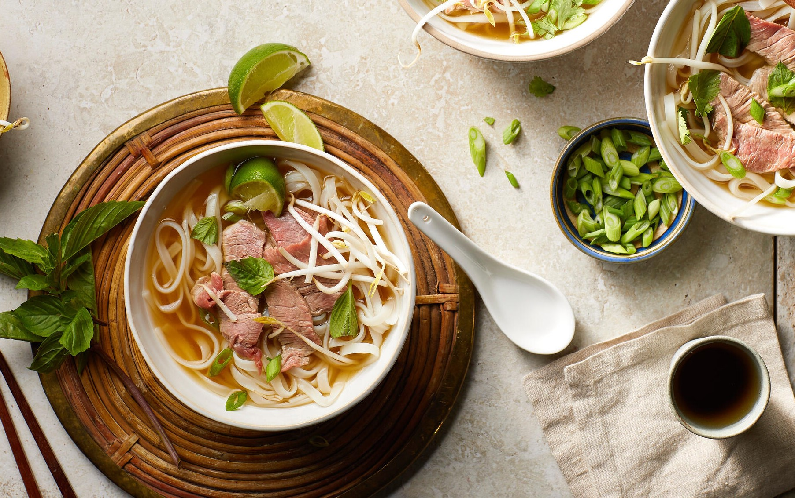

Odin Recipes
Beef Pho

Description
Ingredients
- 5 pounds beef soup bones
- 1 tablespoon salt
- 2 medium onions, quartered
- 1 (4 inch) piece fresh ginger root
- 2 pounds beef oxtail
- 1 white (daikon) radish, sliced
- 2 ounces whole star anise pods
- ½ (3 inch) cinnamon stick
- 2 whole cloves
- 1 teaspoon black peppercorns
- 1 tablespoon white sugar
- 1 tablespoon fish sauce
- 1 ½ pounds dried flat rice noodles
- ½ pound frozen beef sirloin